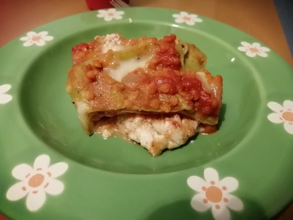

Linsen-Lasagne

- Zubereitung: ca. 30 Minuten
- Backzeit: 35 Stunden
- Für 4 Portionen
Zutaten
- 200 g Möhren
- 1 Zwiebel
- 2 Knoblauchzehen
- 2 EL Öl
- 150 g rote Linsen
- 680 g Tomatensauce
- Balsamico-Essig
- 300 ml Gemüsebrühe
- 500 g Ricotta
- 1 Zucchini
- 12 Lasagne-Platten (ohne Vorkochen)
- 125 g Mozzarella
Zubereitung
- Möhren schälen, putzen. Zwiebel und Knoblauch abziehen. Alles
sehr fein würfeln. Öl in einem Topf erhitzen, Gemüsewürfel unter Rühren
andünsten. Linsen zugeben, ca. 4 Minuten mitdünsten. Tomatensauce und
300 ml Wasser hinzufügen, alles ca. 10 Minuten köcheln lassen. Mit Salz,
Pfeffer, Zucker, Essig abschmecken.
- Inzwischen Brühe in einem Topf erhitzen, Ricotta einrühren. Zucchini
waschen, putzen, in Scheiben hobeln. Backofen auf 200° Celsius
(Umluft: 180° Celsius) vorheizen.
- In eine Auflaufform (ca. 31 x 21 cm) nacheinander
Ricottasauce, Nudelplatten, Linsensauce und Zucchinischeiben füllen.
So weiterverfahren, bis alles verbraucht ist. Am besten mit Linsensauce
abschließen. Mozzarella in Scheiben schneiden, auf der Lasagne verteilen.
Lasagne im vorgeheizten Ofen auf mittlerer Schiene ca. 35 Minuten überbacken.